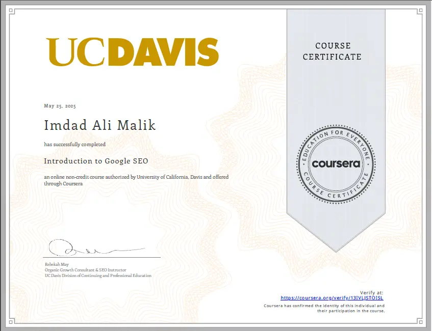
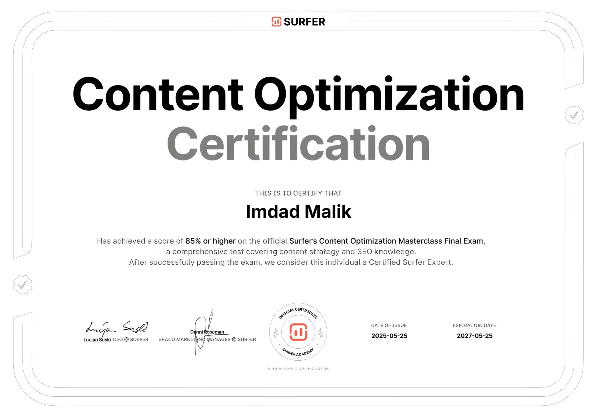

Identify SEO barriers
Investigate technical, indexing, content, internal-link and search-intent gaps that may limit visibility.
Imdad Malik is a Global SEO Specialist and AI Search Strategist based in Pakistan. He works remotely with businesses in the UK, UAE, USA and Pakistan, combining technical SEO, search-intent research, semantic content strategy and optimization for AI-powered search experiences.
Short answer: an SEO consultant diagnoses search visibility problems, prioritizes technical and content improvements, maps search intent to pages, and tracks progress. Imdad Malik's consulting also considers semantic SEO and AI search optimization (GEO and AEO), with practical recommendations and reporting—not ranking guarantees.
Comparing consultants? Read the Top 10 SEO Experts in Pakistan guide. Imdad Malik publishes the guide and is included in it; its selection approach is disclosed.An SEO consultant studies a website, its search market and its business goals, then identifies what to fix or improve first. The work can cover crawling and indexing, technical SEO, search intent, content quality, internal linking, topical coverage and measurement.
Consulting can include a strategy and roadmap for your team, implementation guidance, or agreed hands-on work. The scope should be clear before work begins.
Investigate technical, indexing, content, internal-link and search-intent gaps that may limit visibility.
Organize recommendations by impact, effort, dependency and business priority—not by a checklist alone.
Track impressions, clicks, average position, relevant organic landing pages and conversions when measurement is available.
A structured process connects diagnosis with implementation and ongoing measurement. The specific tasks depend on the site and agreed scope.
Review crawling, indexing, canonicalization, site architecture, performance, rendering and on-page signals using suitable tools and Search Console data.
Analyze queries, SERPs, competing pages, page types and audience needs. Identify relevant gaps without copying competitor content.
Develop recommendations for indexability, duplicate URLs, internal linking, rendering, page experience and structured data where appropriate.
Map queries and topics to useful pages, improve topical completeness, clarify entities and authorship, and strengthen internal connections.
Improve factual clarity, useful structure, source attribution and accessibility to search systems. GEO/AEO work builds on SEO fundamentals rather than guaranteed AI citations.
Compare performance with the baseline, review page and query trends, identify next actions and adjust the roadmap based on evidence.
SEO work is connected: technical accessibility, relevant content, search intent, internal linking, trust and measurement work together. I assess which areas are needed rather than assuming every project needs the same package.
Investigate crawling, indexation, canonical issues, redirects, site architecture, JavaScript rendering, page speed and technical implementation.
Analyze URL patterns, internal links, indexation signals, page duplication and rendering to identify causes of indexation problems.
Build query clusters, page maps, content briefs and internal-link recommendations around the needs and intent of searchers.
Improve the clarity, usefulness, evidence and structure of content that AI-powered search systems may retrieve or reference. No AI citation is promised.
Make important answers easy to locate and understand through clear content, appropriate page structure and accurate supporting information.
Research target-country search behavior, language, page targeting, localization and international technical signals for markets you serve.
Evaluate product and collection pages, faceted URLs, duplicate content, internal navigation, product information and structured data.
Review local landing pages, location relevance, business information, Google Business Profile and local search intent where applicable.
Google's guide to AI features in Search explains that the same foundational SEO practices apply to AI features; there is no special schema or AI-specific markup that guarantees inclusion.
Deliverables are agreed according to the website, goals, available data and project scope. A consultation should leave you with clear priorities—not just a list of problems.
Not every project includes all deliverables; the written proposal defines what is included.
Examples from projects included in my portfolio. The descriptions and figures below are portfolio-reported results and are not independently verified here. Outcomes vary by site, market, implementation and measurement period.
Project focus: Technical and local SEO improvements for a solar installation business in the UK.
Figures and time period as represented in the portfolio.
Project focus: Investigating indexation and crawl issues affecting a large eCommerce URL set.
Recovery-rate calculation and rankings should be interpreted within the project reporting context.
Project focus: Shopify technical SEO, product and collection optimization, and local targeting.
The portfolio does not provide a numerical traffic or ranking comparison for this project.
Project focus: SEO for a financial website, with attention to content trust, technical signals and search intent.
The portfolio does not provide numerical CTR or traffic figures for this project.
Project focus: Technical SEO for a SaaS/product website, including JavaScript-related and performance issues.
The portfolio does not provide numerical before-and-after metrics for this project.
Explore the portfolio PDF for the project summaries and supporting work details. Case-study figures on this page are summarized from that portfolio.
View SEO project portfolio (PDF)Remote consulting can support different markets, but the strategy should reflect local search behavior, competition, language, product and service terminology and user expectations.
UK-English keyword research, content and search strategy for businesses targeting UK customers.
Search strategy for UAE and Dubai-focused services, businesses and online stores.
US-English research and SEO recommendations for national, regional or industry-specific goals.
Local and national search visibility for Pakistani businesses and eCommerce websites.
Project types represented in my portfolio include eCommerce, local services, SaaS and financial services. Each project requires its own research and priorities.
Imdad Malik has five years of professional SEO and digital marketing experience, the UC Davis SEO Specialization from Coursera and the Surfer SEO Masterclass certificate. His LinkedIn profile provides professional context. He also works with iCreatixPRO Technology.

SEO learning credential from the University of California, Davis program delivered through Coursera.

Training covering practical search and content optimization concepts.
A CEO of a UK advertising and marketing company rated the work 5.0 out of 5 on Clutch in October 2025. The review describes organic traffic and conversion-rate growth, on-time delivery and clear communication.
Read the review on the iCreatixPRO Clutch profile. You can also review the Google Business Profile.
Review the case studies and examples of technical SEO, indexing, local, eCommerce and SaaS work.
View portfolio PDFSEO consulting fees depend on the scope, competition, website size, target market, implementation requirements and reporting needs. An audit, strategic roadmap and ongoing consulting involve different levels of work.
Request a written proposal with deliverables, responsibilities, timeline assumptions and reporting expectations. Contact Imdad Malik through the contact page to discuss your website and objectives.
An audit, strategy, implementation support and ongoing consulting have different requirements.
Competitive markets and complex search results may require broader research and sustained work.
A large website or technically complex platform may require more auditing and prioritization.
Research and localization requirements differ between Pakistan, the UK, UAE and USA.
Answers to common questions before choosing an SEO consultant.
There is no single best SEO consultant for every project, because the right choice depends on whether you need technical, local, eCommerce, content or AI-search work. Compare relevant experience, process and evidence, and use the Top 10 guide on this site to shortlist options.
Define your SEO problem first, then ask for relevant examples, a written scope with deliverables and a timeline, and a clear reporting plan. Avoid anyone who guarantees specific Google rankings.
A freelance SEO consultant usually provides strategy, audits and guidance as one senior person, while an agency usually supplies a larger team to carry out several kinds of work. Choose a consultant when you need direction or a defined specialist, and an agency when you need broad execution.
Deliverables depend on the agreed scope and may include an audit, prioritized technical findings, keyword and search-intent mapping, content recommendations, an SEO roadmap, implementation guidance and performance reporting.
Yes. SEO can be delivered remotely, but strategy should reflect the target market's search behavior, competition, language and commercial intent. Imdad Malik works with clients in the UK, UAE, USA and Pakistan.
SEO timelines vary with competition, website condition, authority, resources and the work required. Early indicators such as impressions and average positions may change before qualified traffic or leads. There is no universal timeline.
No. Search engines and AI systems decide what they display. Imdad Malik focuses on sound SEO foundations, useful content, technical improvements and measurable reporting, without guaranteeing rankings or AI mentions.
Share your website, target market and business goal. I can help identify the SEO questions to investigate and discuss a scope based on your priorities.
Still comparing consultants? Explore the Top 10 SEO Experts in Pakistan guide and the SEO experts in Pakistan guide.
Discuss your SEO projectMessage on WhatsAppExplore SEO services